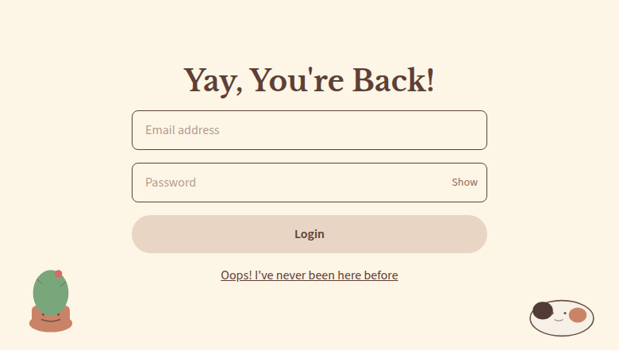
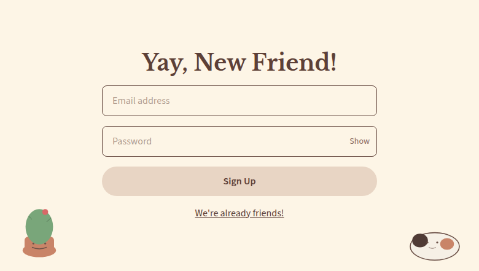
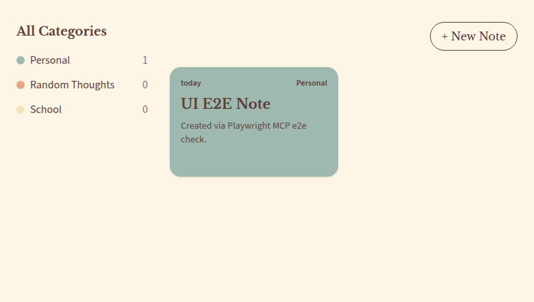
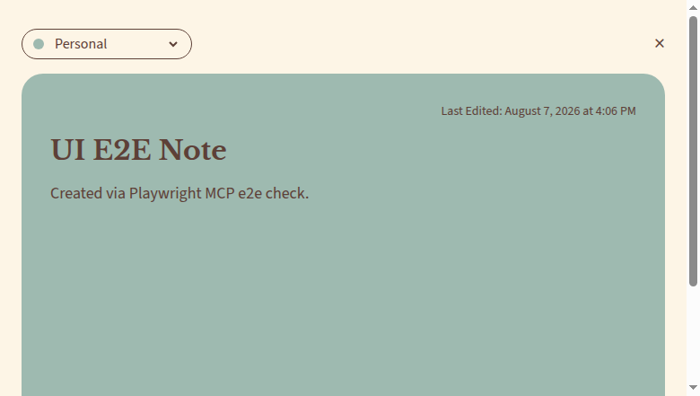

1. Architecture overview
Two independent applications (front and back), each in its own GitHub repository, deployed via Terraform to two isolated AWS environments. Staging and production are both live in account 615737882760 (us-east-2).
flowchart TB
U["🌐 User (browser)"]
subgraph STG["STAGING — live today ✅"]
direction TB
CFW_S["CloudFront (web)
d1qdib1mcwro0s.cloudfront.net"]
S3_S["S3 turboai-notes-staging-web-615737882760
Next.js static export"]
CFA_S["CloudFront (api)
d1ukfp2c7u1v45.cloudfront.net"]
ALB_S["ALB turboai-notes-staging-alb (HTTP :80)"]
ECS_S["ECS Fargate — turboai-notes-staging
container api :8000 (gunicorn/Django)"]
RDS_S[("RDS Postgres 16
turboai-notes-staging-pg (db.t4g.micro)")]
CW_S["CloudWatch Logs
/turboai/notes/staging/api"]
CFW_S --> S3_S
CFA_S --> ALB_S --> ECS_S
ECS_S --> RDS_S
ECS_S -. logs .-> CW_S
end
subgraph PRD["PROD — live ✅ (same Terraform module)"]
direction TB
CFW_P["CloudFront (web)
doj4lx2n5ynh4.cloudfront.net"]
S3_P["S3 turboai-notes-prod-web-615737882760
Next.js static export"]
CFA_P["CloudFront (api)
djnxnkcoh52pi.cloudfront.net"]
ALB_P["ALB turboai-notes-prod-alb (HTTP :80)"]
ECS_P["ECS Fargate — turboai-notes-prod
container api :8000 (gunicorn/Django)"]
RDS_P[("RDS Postgres 16
turboai-notes-prod-pg (db.t4g.micro)")]
CW_P["CloudWatch Logs
/turboai/notes/prod/api"]
CFW_P --> S3_P
CFA_P --> ALB_P --> ECS_P
ECS_P --> RDS_P
ECS_P -. logs .-> CW_P
end
U -->|HTTPS| CFW_S
U -->|"HTTPS + httpOnly cookies"| CFA_S
U -->|HTTPS| CFW_P
U -->|"HTTPS + httpOnly cookies"| CFA_P
classDef live fill:#e3edf5,stroke:#4f7cac,stroke-width:1.5px,color:#1f3a52;
classDef prod fill:#e7f0e3,stroke:#6b9e6e,stroke-width:1.5px,color:#2e5230;
class CFW_S,S3_S,CFA_S,ALB_S,ECS_S,RDS_S,CW_S live;
class CFW_P,S3_P,CFA_P,ALB_P,ECS_P,RDS_P,CW_P prod;
First prod apply completed 2026-08-10 via published GitHub Releases (turboai-notes-api v1.0.3, then turboai-notes-web). State: s3://turboai-notes-tfstate-615737882760/prod/terraform.tfstate. Record: docs/process/16-prod-deploy.md.
Real staging URLs (2026-08-07, still live)
https://d1qdib1mcwro0s.cloudfront.nethttps://d1ukfp2c7u1v45.cloudfront.net/api/docs/ and /api/schema/GET /api/health/ → {"status": "ok"}Real production URLs (2026-08-10)
https://doj4lx2n5ynh4.cloudfront.nethttps://djnxnkcoh52pi.cloudfront.nethttps://doj4lx2n5ynh4.cloudfront.net/architecture//api/docs/ and /api/schema/GET /api/health/ → {"status": "ok"}turboai-notes-prod-web-615737882760 / E2GYF210PBEKMProduct look and feel (visual reference)




Cream palette (#FDF5E6), serif typography (Libre Baskerville) for headings and Source Sans 3 for body text, colored categories: Random Thoughts #E9A680, School #F3E3B5, Personal #9EBAB0 — defined in the backend (apps/notes/services.py) and mirrored in frontend/src/app/globals.css.
2. GitHub repositories
Two independent public repositories under the jhgcc1 account, each with its own CI/CD, but following exactly the same branching strategy.
| Repository | Content | Local path |
|---|---|---|
jhgcc1/turboai-notes-api | Django/DRF, Terraform (terraform/), AWS MCP (mcp/) | /home/jhgcc1/turboai/backend |
jhgcc1/turboai-notes-web | Next.js (App Router), static export | /home/jhgcc1/turboai/frontend |
flowchart LR FB["feature branches
feature/*"] -->|"PR (1 approval required)"| DEV["develop"] DEV -->|"push / merge"| CI1["CI: lint + typecheck
+ tests + 100% coverage"] CI1 -->|green| DEPS["Automatic deploy
environment: staging"] DEV -->|"PR (1 approval required)"| MAIN["main"] MAIN -->|"gh release create (published)"| CI2["CI: lint + typecheck
+ tests + 100% coverage"] CI2 -->|green| DEPP["Deploy
environment: prod ✅"] classDef live fill:#e3edf5,stroke:#4f7cac,stroke-width:1.5px,color:#1f3a52; classDef prod fill:#e7f0e3,stroke:#6b9e6e,stroke-width:1.5px,color:#2e5230; class DEV,CI1,DEPS live; class MAIN,CI2,DEPP prod;
Branch protection (actual state today, verified via the GitHub API)
| Rule | main (both repos) | develop |
|---|---|---|
| Required PR approvals | 1 | unprotected |
| Dismiss stale reviews | yes | — |
| Require code owner approval | no (no CODEOWNERS) | — |
| Required status checks (CI) | not configured | — |
| Force-push / delete | blocked | allowed |
docs/process/00-MASTER-PLAN.md lists "branch protection on main" as a pending item. Today there is 1 required approval on main in both repos, but CI is not a required status check — meaning a PR can technically be merged into main even with a red CI workflow, as long as it has 1 approval. The GitHub Environments staging/prod also have no protection_rules (no required reviewer before applying to prod).
3. GitHub Actions / CI-CD
Each repository has exactly three workflows: ci.yml, deploy.yml, and ai-review.yml. No other workflow exists today.
turboai-notes-api
| Workflow | Trigger | What it does |
|---|---|---|
ci.yml | pull_request, push on main/develop, workflow_call | Python 3.12 → ruff format --check, ruff check, mypy (non-blocking, runs with || true), pytest (100% coverage on apps/) |
deploy.yml | push:develop → staging; release:published → prod; workflow_dispatch | OIDC → ECR push (image :sha and :latest) → terraform init/plan/apply in terraform/envs/{staging|prod} → ecs update-service --force-new-deployment → smoke test on /api/health/ and /api/docs/ |
ai-review.yml | pull_request (opened/synchronize/reopened) | Heuristic regex-based comment on the diff (not an LLM): detects hardcoded SECRET_KEY, localStorage with a token, password without validate_password, eval() |
turboai-notes-web
| Workflow | Trigger | What it does |
|---|---|---|
ci.yml | same as API | Node 20 → prettier --check, eslint, tsc --noEmit, vitest run --coverage (100% coverage on src/, except layout.tsx) |
deploy.yml | same as API | OIDC → does not run Terraform (consumes secrets already filled in from the API's Terraform outputs) → next build with build-time NEXT_PUBLIC_API_URL → aws s3 sync out/ → cloudfront create-invalidation "/*" → smoke curl against WEB_URL |
ai-review.yml | same as API | Regex heuristic: localStorage + token, NEXT_PUBLIC_*SECRET/PASSWORD, auth/ownership logic leaking into the frontend |
Sequence: push to develop → automatic staging deploy
sequenceDiagram
actor Dev as Developer
participant GH as GitHub (develop)
participant CI as ci.yml (quality)
participant DPL as deploy.yml
participant AWS as AWS (OIDC AssumeRole)
participant ECR as ECR
participant TF as Terraform
participant ECS as ECS Fargate
participant S3 as S3 + CloudFront (web)
Dev->>GH: git push / merge PR into develop
GH->>DPL: triggers deploy.yml (push:develop)
DPL->>CI: needs: ci (reuses ci.yml via workflow_call)
CI-->>DPL: lint / typecheck / tests / coverage OK
DPL->>AWS: configure-aws-credentials (secrets.AWS_ROLE_ARN, OIDC)
Note over DPL,ECR: turboai-notes-api repository
DPL->>ECR: docker build + push image :sha and :latest
DPL->>TF: terraform init / plan / apply (terraform/envs/staging)
DPL->>ECS: update-service --force-new-deployment + wait services-stable
DPL->>DPL: smoke test GET /api/health/ and /api/docs/
Note over DPL,S3: turboai-notes-web repository (parallel, independent workflow)
DPL->>S3: next build (NEXT_PUBLIC_API_URL=secrets.API_URL) + s3 sync out/
DPL->>S3: cloudfront create-invalidation --paths "/*"
DPL->>DPL: smoke test curl against WEB_URL
develop triggers two independent deploy workflows (one per repository), both using the same OIDC role.Sequence: publish a Release → prod deploy (exercised 2026-08-10)
sequenceDiagram actor M as Maintainer participant GH as GitHub participant DPL as deploy.yml participant ENV as Environment "prod" participant AWS as AWS (OIDC) participant TF as Terraform (envs/prod) M->>GH: Publish GitHub Release (from main) GH->>DPL: triggers deploy.yml (release: published) DPL->>ENV: uses Environment "prod" — no required reviewer today DPL->>AWS: configure-aws-credentials (secrets.AWS_ROLE_ARN) DPL->>TF: terraform init / plan / apply (terraform/envs/prod) Note over TF: Applied — API https://djnxnkcoh52pi.cloudfront.net
Web https://doj4lx2n5ynh4.cloudfront.net DPL-->>M: Job summary + smoke health/docs
main alone does not deploy; a published GitHub Release triggers Terraform apply + ECS/S3 ship.deploy.yml filesThe API's deploy.yml hardcodes AWS_REGION: us-east-2 directly in the YAML (ignores any secret). The frontend's, however, uses AWS_REGION: ${{ secrets.AWS_REGION || 'us-east-1' }} — if the AWS_REGION secret isn't set in the web repo, it would fall back to us-east-1, the wrong region. Today the secret is correctly configured in both repos, but this is a real code divergence, not a hypothetical one.
Despite the name "AI PR Review", the workflow today only runs regular expressions (eval(, localStorage+token, hardcoded key, etc.) via actions/github-script. The bot's comment mentions configuring OPENAI_API_KEY "later" — no LLM call is implemented and that secret is not configured.
4. AWS — which parts do what
All Terraform lives in backend/terraform/ — two modules (modules/stack for the application infrastructure and modules/observability for logs, alarms and error triage), both reapplied by envs/staging and envs/prod. Remote state in S3 (turboai-notes-tfstate-615737882760) with a DynamoDB lock (turboai-notes-tflock), region us-east-2.
flowchart TB
subgraph VPC["VPC turboai-notes-staging-vpc — 10.0.0.0/16"]
subgraph PUB["Public subnets (2 AZs)"]
ALB["ALB
turboai-notes-staging-alb"]
ECS["ECS Fargate task
assign_public_ip=true
SG turboai-notes-staging-ecs"]
BAST["EC2 Bastion — t4g.micro
SG turboai-notes-staging-bastion
SSH :22 (bastion_ssh_cidr /32)"]
end
subgraph PRIV["Private subnets (2 AZs)"]
RDS[("RDS Postgres 16
db.t4g.micro
SG turboai-notes-staging-db")]
end
end
CFAPI["CloudFront (api)"] -->|"HTTP :80"| ALB --> ECS
ECS -->|":5432"| RDS
BAST -->|"local SSH tunnel → :5432"| RDS
ECR["ECR turboai-notes-staging"] -. docker image .-> ECS
ECS -. logs .-> CW["CloudWatch Logs
/turboai/notes/staging/api (7 days; 30 in prod)"]
CW -. ERROR metric filter .-> OBS["modules/observability — see section 5
alarms → SNS → triage Lambda → email"]
ROLE_EXEC["IAM Role: ecs-exec
AmazonECSTaskExecutionRolePolicy
+ secretsmanager:GetSecretValue"] -. used by .-> ECS
ROLE_TASK["IAM Role: ecs-task
logs:PutLogEvents/CreateLogStream"] -. used by .-> ECS
SM["Secrets Manager
turboai-notes-staging-django-secret-key
turboai-notes-staging-db-password"] -. resolved at startup via ecs-exec .-> ECS
classDef live fill:#e3edf5,stroke:#4f7cac,stroke-width:1.5px,color:#1f3a52;
class ALB,ECS,BAST,RDS,ECR,CW,OBS,ROLE_EXEC,ROLE_TASK,SM live;
10.1.0.0/16, deletion_protection=true, 30-day log retention (vs 7), tighter alarm thresholds, and names with a -prod suffix. Backups stay at 1 day in both environments (free-tier accounts reject a longer retention). Everything the observability module adds on top of this map is in section 5.Resource inventory by category
| Category | Resources (Terraform) | Detail |
|---|---|---|
| Networking | aws_vpc, aws_internet_gateway, 2 public subnets + 2 private, aws_route_table (public → IGW) | No NAT Gateway — there is no aws_nat_gateway resource; ECS tasks run in a public subnet with their own public IP |
| Network security | 4 Security Groups: alb (80 from 0.0.0.0/0), ecs_tasks (8000 only from the ALB), db (5432 from ECS+bastion), bastion (22 from var.bastion_ssh_cidr only) | Bastion SSH is operator-IP-restricted (/32 default in env main.tf; optional local terraform.tfvars); update the CIDR when the public IP changes — never reopen 0.0.0.0/0 |
| Compute (API) | aws_ecr_repository, aws_ecs_cluster, aws_ecs_task_definition (Fargate, 256 CPU / 512 MB), aws_ecs_service (desired_count=1) | ECS Fargate, not App Runner — comment in the code: "App Runner is closed to new customers (2026-04-30)". Mentions of App Runner in docs/costs/estimated-cost.md are outdated. |
| Load balancing | aws_lb (ALB, internet-facing, only an HTTP :80 listener), aws_lb_target_group (health check /api/health/) | No HTTPS on the ALB — TLS terminates at CloudFront; CloudFront→ALB is plain HTTP (origin_protocol_policy = "http-only") |
| CDN (API) | aws_cloudfront_distribution.api | Default CloudFront certificate (no custom domain); caching disabled (Managed-CachingDisabled) |
| Static frontend | aws_s3_bucket.web (private, OAC), aws_cloudfront_distribution.web, aws_cloudfront_function.web_spa_rewrite | CloudFront function rewrites /route/ → /route/index.html to match next build -o export; S3 403/404 errors are turned into 200 responses serving index.html |
| Database | aws_db_instance.postgres — Postgres 16, db.t4g.micro, 20→50GB, private subnet, publicly_accessible=false | 1-day backup retention in both environments (free-tier accounts reject more than 1, FreeTierRestrictionError); deletion_protection and skip_final_snapshot=false only in prod |
| IAM | Role ecs-exec (pulls the image + resolves secrets:), Role ecs-task (writes logs only), Bastion role (SSM Core), Role {env}-triage (the error-triage Lambda) | The turboai-notes-github-actions deploy role (OIDC) is created outside Terraform, via a script (scripts/bootstrap-aws-github-oidc.sh). The triage role is narrow: Insights queries on one log group, UpdateItem/GetItem on one table, GetSecretValue on the LLM secret and, only when jira_enabled=true, on the Jira secret too — sns:Publish on the reports topic only. |
| CloudWatch — logs & metrics ( modules/observability) | Log group /turboai/notes/{env}/api, log group /aws/lambda/{env}-triage, aws_cloudwatch_log_metric_filter.{env}-app-errors, aws_cloudwatch_dashboard.{env}-observability | App log retention: 7 days staging, 30 days prod; Lambda logs 14 days. The metric filter matches { $.level = "ERROR" } and emits AppErrorCount in the turboai/notes/{env} namespace. Dashboard: error count, response classes, latency p50/p95/p99, RDS CPU/connections, live table of recent errors. See section 5. |
| Alarms & notifications ( modules/observability) | 7 aws_cloudwatch_metric_alarm (-app-errors, -5xx, -latency-p95, -no-healthy-hosts, -rds-cpu, -rds-free-storage, -triage-failures), 2 aws_sns_topic ({env}-alarms, {env}-triage-reports) + topic policies, optional aws_sns_topic_subscription (email) | Debuggable alarms fan into {env}-alarms → triage Lambda; infrastructure alarms go straight to {env}-triage-reports → inbox. The -5xx alarm moved here from modules/stack and now has a notification target (thresholds: >10/5 min staging, >5 prod). |
| Error triage (serverless) ( modules/observability) | aws_lambda_function.{env}-triage (python3.12, 512 MB, 180 s), aws_dynamodb_table.{env}-error-fingerprints (PAY_PER_REQUEST, TTL), aws_secretsmanager_secret.{env}-llm-credentials, optionally aws_secretsmanager_secret.{env}-jira-credentials (created count = var.jira_enabled ? 1 : 0), aws_lambda_permission + aws_sns_topic_subscription (lambda) | Zip built by archive_file from the working tree (~43 KB, no build step) and carries a copy of apps/ + config/ so the function can quote the failing source lines. Both secrets are created with a REPLACE_ME placeholder and ignore_changes, so the MiniMax key and the Jira API token never enter the state file. The Lambda reads each secret at runtime via its own Secrets Manager id; an HTTP Basic auth header is built per Jira call and never logged. |
| Bastion | aws_instance.bastion — t4g.micro, Amazon Linux 2023 ARM64, IMDSv2 required | Used exclusively for the MCP SSH tunnel (section 8); also reachable via SSM Session Manager |
IAM — GitHub OIDC deploy role (outside Terraform)
arn:aws:iam::615737882760:oidc-provider/token.actions.githubusercontent.comturboai-notes-github-actions — assumed via sts:AssumeRoleWithWebIdentitysubrepo:jhgcc1/turboai-notes-api:* and repo:jhgcc1/turboai-notes-web:*Resource:"*") across ECR/ECS/RDS/EC2/S3/CloudFront/Logs/ELB; Secrets Manager restricted to arn:...:secret:turboai-notes-*docs/process/07-security-audit.md recommends narrowing the deploy role's Resource:"*" scope down to the specific ARNs that Terraform manages. This is listed as a pending recommendation, not something already fixed.
5. Observability — from a production error to a debugged report
Structured JSON logs from the API and browser errors posted to /api/observability/client-error/, a CloudWatch metric filter, alarms, and a Lambda that asks MiniMax to debug the failure and files a Jira issue in project KAN (staging). Everything is Terraform in backend/terraform/modules/observability/; the Lambda source is backend/observability/. Reference document: docs/architecture/observability.md.
Until 2026-08-10 the only error signal was a single alarm on ALB 5xx counts with a threshold of 50 in five minutes — and it was wired to no notification target at all. Worse, DRF turns exceptions into responses silently: a permission bug returning 403, a serializer rejecting valid input, or a token-refresh loop produced no log line, so those failures were invisible even to someone reading CloudWatch by hand.
flowchart TB APP["Django + gunicorn on ECS Fargate
DRF exception handler logs JSON + fingerprint"] DRV["awslogs log driver
container stdout, one JSON object per line"] LG["CloudWatch Logs
/turboai/notes/staging/api"] MF["Metric filter turboai-notes-staging-app-errors
matches the JSON level field, not the message text"] MET["Custom metric turboai/notes/staging
AppErrorCount"] ALARM["Alarm turboai-notes-staging-app-errors
Sum of 5 or more in 5 min (prod: 3)"] TAL["SNS topic turboai-notes-staging-alarms"] LAM["Lambda turboai-notes-staging-triage
python3.12, stdlib + boto3, ~43 KB zip"] INS["Logs Insights
sample recent ERROR rows, group by fingerprint"] DDB[("DynamoDB turboai-notes-staging-error-fingerprints
occurrence counter, 72h TTL")] SRC["Bundled source copy
apps/ + config/ under repo/ inside the zip"] LLM["MiniMax-M2.1
root cause + unified diff + repro steps"] TRP["SNS topic turboai-notes-staging-triage-reports"] MAIL["Operator inbox
confirmed email subscription"] INFRA["Infrastructure alarms
no healthy hosts, RDS CPU/storage, triage failures"] APP --> DRV --> LG --> MF --> MET --> ALARM --> TAL --> LAM LAM -->|"1. sample the errors behind the alarm"| INS LAM -->|"2. count occurrences, suppress repeats"| DDB LAM -->|"3. resolve traceback frames to real lines"| SRC LAM -->|"4. debug against the code shown"| LLM LAM -->|"5. publish the report"| TRP --> MAIL INFRA -->|"nothing in the app logs to debug"| TRP classDef live fill:#e3edf5,stroke:#4f7cac,stroke-width:1.5px,color:#1f3a52; class APP,DRV,LG,MF,MET,ALARM,TAL,LAM,INS,DDB,SRC,LLM,TRP,MAIL,INFRA live;
Two SNS topics, on purpose
Alarms the Lambda can actually debug from application logs publish to turboai-notes-{env}-alarms; the Lambda publishes its report to turboai-notes-{env}-triage-reports. With a single topic the function would subscribe to its own output and re-trigger itself indefinitely. The split has a second benefit: infrastructure alarms that no application log line can explain (no healthy hosts, RDS CPU and free storage, and the triage Lambda's own failures) publish straight to the reports topic, so they reach the operator without a pointless round trip through the LLM.
Structured logging
Every log line is a single JSON object produced by JsonFormatter in config/middleware.py, carrying level, logger, message, time, service, environment, plus whatever the call site passed as extra: request_id, route, method, status, duration_ms, user_id, error_type, fingerprint, and the full exc_info traceback on errors. service and environment come from the process environment (SERVICE_NAME, ENVIRONMENT) rather than django.conf.settings, because LOGGING is applied while settings are still being imported.
Where errors are captured
| Source | Level | What it logs |
|---|---|---|
config/exception_handler.py | ERROR for 5xx, WARNING for 4xx | Every DRF exception — turbo_exception_handler is wired as REST_FRAMEWORK["EXCEPTION_HANDLER"], logs with exc_info and a fingerprint, then defers to DRF for the actual response shape |
config/middleware.py | INFO / ERROR | One INFO line per request (route, status, duration_ms, request_id) plus an ERROR line for any response with status ≥ 500 |
apps/accounts/views.py | WARNING | Token blacklist and refresh rejections that used to be swallowed by a bare except: pass |
apps/observability/views.py + SPA ClientErrorReporter | ERROR | Browser window.onerror / unhandledrejection POSTs to /api/observability/client-error/; the API emits a structured ERROR so the same CW → Lambda → MiniMax → Jira KAN pipeline picks it up |
4xx stays at WARNING deliberately: logging client mistakes at ERROR would make the alarm — and the whole triage automation behind it — fire on ordinary bad requests.
$.level, not the string [ERROR]ERROR lines get an [ERROR] prefix in their message so they stay greppable in plain-text views (the ECS console, docker logs, MCP logs_tail). The alarm, however, filters on the JSON field:
pattern = "{ $.level = \"ERROR\" }"Matching the literal text instead would mean a user creating a note whose body contains "[ERROR]" could raise a false alarm and burn an LLM call on a non-incident.
watchtower used to run inside Django alongside the ECS awslogs driver, sending every line to the same log group twice — double ingest cost and double counting on the metric filter that triggers triage. The task definition now sets CLOUDWATCH_ENABLED=false and relies on the driver. Turn watchtower back on only for a runtime that does not forward stdout, such as a plain EC2 process.
Fingerprints and deduplication
config/fingerprint.py hashes three things into a 16-character key: the exception type, the normalised route (numeric and UUID path segments are collapsed, so /api/notes/42/ and /api/notes/43/ share one route), and the deepest non-vendor traceback frame. The exception message is deliberately excluded — messages usually embed ids, emails or values that differ between occurrences of the same bug, which would split one recurring bug into a new fingerprint, and a new email, on every single call.
State lives in DynamoDB (turboai-notes-{env}-error-fingerprints), keyed by fingerprint. A single UpdateItem with ReturnValues="ALL_OLD" both increments the counter and reveals whether this was the first sighting, which avoids the read-then-write race that would let two concurrent alarm deliveries both decide they are first.
| Situation | Behaviour |
|---|---|
| First sighting of a fingerprint | Send a report, subject prefixed NEW |
| Afterwards | Send only every RESEND_EVERY occurrences (default 10), subject prefixed RECURRING |
After DEDUP_TTL_HOURS (default 72) | The record expires, so a bug that goes quiet and comes back counts as new again |
| Alarm stays in ALARM state | Suppressed — without the counter, every evaluation period would email |
| Alarm state is OK / INSUFFICIENT_DATA | Skipped: a state change is not an incident |
How the Lambda reads the source code
This is the part that makes the email a debugging report rather than a log forward. Terraform's archive_file adds a copy of apps/ and config/ to the zip under repo/, straight from the working tree — no build step, no Lambda layer, about 43 KB zipped. At runtime triage/repo.py:
- Parses the traceback frames, discarding
site-packages,dist-packagesand stdlib frames. - Resolves each frame's container path (
/app/apps/notes/views.py) to a bundled file by matching progressively shorter path suffixes — container and bundle paths only share a suffix, so an exact match is not enough. - Reads a line-numbered window around the failing line (±40 lines,
CODE_WINDOW_LINES). - Orders the excerpts deepest-frame-first, since that is where the exception actually surfaced.
The repository is never sent wholesale. Selection is traceback-driven and capped by a total character budget (CODE_CONTEXT_CHARS, default 24000). When no project frame can be resolved, it falls back to mapping the failing route to an app directory — /api/notes/ → apps/notes/{views,serializers,services,models,permissions}.py.
The model receives the failing request, the traceback, a compact file index of the bundle, the resolved source excerpts, and a sample of other recent occurrences of the same fingerprint. It is asked for a root cause grounded in the code shown, suspected file:line locations, a unified diff, fix steps, reproduction steps, a severity, and a confidence rating.
Lambda layout (backend/observability/)
| File | Responsibility |
|---|---|
handler.py | Entrypoint handler.main: unwraps the SNS envelope (or a direct invocation payload), then runs the pipeline per alarm. One failing alarm never drops the rest of the batch. |
triage/settings.py | Environment variables and Secrets Manager lookup (cached for the life of the container). |
triage/logs.py | Logs Insights query (filter level = "ERROR"), polling, and grouping by fingerprint — most frequent group first, so triage targets the loudest bug. |
triage/dedup.py | DynamoDB counters and attach_issue(), which records a Jira ticket key against a fingerprint so recurrences of the same bug skip the create call and the email starts with the existing key. |
triage/repo.py | Traceback → source excerpts, as described above. |
triage/llm.py | MiniMax chat completions (OpenAI-compatible /chat/completions) plus defensive JSON parsing into a structured Analysis. |
triage/jira.py | Optional Jira Cloud integration: POST /rest/api/3/issue with HTTP Basic auth, Atlassian Document Format description, de-duplicated labels. Reads the API token from Secrets Manager; failures collapse to None and never block the email path. |
triage/notify.py | Plain-text report rendering (now optionally prefixed with [OPS-42] when the fingerprint already has a Jira ticket); SNS delivery, or SES when SES_FROM/SES_TO are configured. |
triage/httpjson.py | urllib JSON POST helper. |
tests/ | Unit tests with no network and no AWS — boto3 is imported lazily inside the functions that need it, and clients are injectable. |
The only dependencies are the standard library and the boto3 that the Python 3.12 runtime already provides. That is what keeps the artifact small enough to be assembled by Terraform itself, with no packaging pipeline to keep in sync.
A provider outage, an empty response, or unparsable JSON produces a degraded analysis that carries the raw model output, and the email is still sent with the logs and the traceback. The response parser locates the first balanced JSON object after stripping <think> blocks, because reasoning models wrap answers in prose even when told not to. An SES failure falls back to SNS.
Alarms
| Alarm | Metric | Condition (staging / prod) | Routes to |
|---|---|---|---|
{env}-app-errors | AppErrorCount (log metric filter) | Sum ≥ 5 / 5 min (prod: ≥ 3) | {env}-alarms → triage Lambda → email (+ Jira, when jira_enabled=true) |
{env}-5xx | HTTPCode_Target_5XX_Count | Sum > 10 / 5 min (prod: > 5) | {env}-alarms → triage Lambda → email (+ Jira, when jira_enabled=true) |
{env}-latency-p95 | TargetResponseTime p95 | > 2 s for 2 consecutive 5-min periods | {env}-alarms → triage Lambda → email |
{env}-no-healthy-hosts | HealthyHostCount | Minimum < 1 for 3 min (missing data treated as breaching) | {env}-triage-reports → email |
{env}-rds-cpu | RDS CPUUtilization | > 85% average for 15 min | {env}-triage-reports → email |
{env}-rds-free-storage | RDS FreeStorageSpace | < 2 GiB (of 20 GiB allocated) | {env}-triage-reports → email |
{env}-triage-failures | Lambda Errors | ≥ 1 in 5 min | {env}-triage-reports → email |
HealthyHostCount is used instead of the ECS RunningTaskCount metric because the latter requires Container Insights, which is not enabled on this cluster. The -triage-failures alarm publishes to the reports topic specifically so that a broken triage function can never trigger itself.
Configuration knobs
| Lambda env var | Default | Effect |
|---|---|---|
CW_LOG_GROUP, ENVIRONMENT, DEDUP_TABLE, SNS_TOPIC_ARN, LLM_SECRET_ID | set by Terraform | Wiring; the invocation fails fast with a ConfigError if any of these is missing |
JIRA_ENABLED, JIRA_PROJECT_KEY, JIRA_ISSUE_TYPE, JIRA_SECRET_ID | false / empty / Bug / empty | Optional Jira integration. When JIRA_ENABLED=true the Lambda creates an issue for the first sighting of a fingerprint and links it in the email. The secret is read out of band via aws secretsmanager put-secret-value; failures collapse to a missing link in the email and never block the report. |
LOOKBACK_MINUTES | 15 | How far back the Insights query samples when an alarm fires |
RESEND_EVERY | 10 | After the first report, re-notify every N occurrences of a fingerprint |
DEDUP_TTL_HOURS | 72 | How long a fingerprint stays suppressed before counting as new |
LLM_BASE_URL, LLM_MODEL | https://api.minimax.io/v1, MiniMax-M2.1 | Any OpenAI-compatible provider works by swapping these two (values in the secret win over the env vars) |
SES_FROM, SES_TO | empty | Empty keeps delivery on SNS; setting both switches to SES and grants the role ses:SendEmail |
DRY_RUN | false | Runs the whole pipeline including the LLM call and writes the report to the function's own logs instead of emailing it |
MAX_EVENTS, CODE_CONTEXT_CHARS, CODE_WINDOW_LINES | 25, 24000, 40 | Sample size and prompt budget. These three have no Terraform variable yet — they fall back to the code defaults in triage/settings.py. |
Operating it
One-time setup after terraform apply
Two manual steps, both unavoidable by design:
- Confirm the email subscription. Set
ops_email(viaTF_VAR_ops_emailor the default in the env'smain.tf) and click the link AWS sends. Until it is confirmed, nothing is delivered. Left empty, Terraform creates the topics with no subscriber. - Populate the MiniMax key out of band. Terraform creates the secret with a
REPLACE_MEplaceholder andignore_changeson its value, so the real key never enters a tfvars file, the state file, or version control:aws secretsmanager put-secret-value \ --secret-id "$(terraform output -raw llm_secret_arn)" \ --secret-string '{"api_key":"sk-...","base_url":"https://api.minimax.io/v1","model":"MiniMax-M2.1"}'
Verifying it end to end
The function treats a bare payload as an alarm, so it can be exercised without waiting for a real incident:
aws lambda invoke \
--function-name "$(terraform output -raw triage_function_name)" \
--payload '{"AlarmName":"manual-test","NewStateValue":"ALARM"}' \
--cli-binary-format raw-in-base64-out /dev/stdoutWith no ERROR line in the lookback window the run reports skipped: no ERROR log events in window, which also confirms the wiring. Set DRY_RUN=true to rehearse the full pipeline, LLM call included, without sending mail.
When a report lands in the inbox
The subject is [{env}] NEW|RECURRING SEVERITY: one-line summary. The body carries the environment, alarm, severity and model confidence, occurrence counts, the fingerprint, the failing endpoint and status, the root cause, suspected file:line locations, the proposed patch and fix steps, reproduction steps, the source files that were inspected, and the original log event with its traceback. A useful order of operations:
- Read the severity and the occurrence count —
RECURRINGwith a high count is a live regression, a one-offNEWmay be a probe or a bad client. - Check the suspected locations against the quoted excerpts. The analysis is LLM-generated and the report says so — verify before acting on it. A
degradednote at the top means the model call failed and only raw log data is included. - Pull the surrounding context with MCP
logs_insightsfiltered on the fingerprint (see section 8), or open the{env}-observabilitydashboard for the blast radius. - Fix it on a branch through the normal flow in section 9. The fingerprint stays stable across occurrences, so the same bug reappearing after 72 h will read as
NEWagain — a signal the fix did not hold.
Within the free tier at this traffic level: the metric filter and alarms are free up to 10 alarms (7 are used), Lambda invocations are negligible, DynamoDB is on-demand, and SNS email is free up to 1,000 notifications. The only variable cost is the LLM call — a few cents per distinct error, which is exactly what fingerprint deduplication is protecting.
The Lambda can optionally file a Jira Cloud issue for the first sighting of a fingerprint, with the email always carrying the ticket link. Same out-of-band secret pattern as the LLM: Terraform creates a placeholder turboai-notes-{env}-jira-credentials with ignore_changes on secret_string, the operator populates it once with aws secretsmanager put-secret-value and the token never enters the state file or the Lambda's environment. Staging uses project KAN (jira_enabled = true, jira_project_key = KAN). The Lambda POST /rest/api/3/issue (Atlassian Document Format, not markdown) the first time a fingerprint appears, records the returned key against the dedup record via dedup.attach_issue, and subsequent sightings of the same fingerprint skip the create call and the email starts with the existing key. Failures collapse to a missing link in the email — they never block notification. Details in docs/architecture/observability.md § Jira.
6. Environment variables and secrets — where each one lives
There are four places where configuration/secrets live, each with a different purpose. The table below was verified directly against terraform/modules/stack/main.tf and terraform/modules/observability/main.tf, the deploy.yml workflows, and docs/process/04-github-secrets.md / 07-security-audit.md.
| Name | Where it lives | How it reaches the app |
|---|---|---|
AWS_ROLE_ARN | GitHub Secrets (repo + staging/prod Environments, both repos) | CI/CD only: aws-actions/configure-aws-credentials assumes the role via OIDC. Never becomes an app variable. |
DB_PASSWORD | GitHub Secrets (api repo) | TF_VAR_db_password → RDS master password (aws_db_instance.password) and written to Secrets Manager turboai-notes-staging-db-password → read by ECS via the secrets: block as POSTGRES_PASSWORD. |
DJANGO_SECRET_KEY | GitHub Secrets (api repo) | TF_VAR_django_secret_key → Secrets Manager turboai-notes-staging-django-secret-key → ECS secrets: → SECRET_KEY env var inside the container. |
AWS_REGION | GitHub Secrets (both repos) | ⚠️ The API ignores this secret (hardcoded us-east-2 in deploy.yml); the web repo reads secrets.AWS_REGION with a fallback to us-east-1. |
API_URL, WEB_URL | GitHub Secrets (both repos) | Filled in manually after the first staging terraform apply; used in smoke tests and as the build-time NEXT_PUBLIC_API_URL for the frontend. |
WEB_BUCKET, CLOUDFRONT_ID | GitHub Secrets (web repo) | Used only in the frontend's deploy.yml: aws s3 sync and cloudfront create-invalidation. |
SECRET_KEY (runtime) | AWS Secrets Manager turboai-notes-{env}-django-secret-key | Task definition secrets: block (valueFrom = ARN) — never appears in plain text in the task definition or the ECS console. |
POSTGRES_PASSWORD (runtime) | AWS Secrets Manager turboai-notes-{env}-db-password | Same — secrets: block. |
MiniMax api_key / base_url / model (runtime, triage Lambda) | AWS Secrets Manager turboai-notes-{env}-llm-credentials | Terraform creates the secret with a REPLACE_ME placeholder and ignore_changes on its value; the real key is written once with aws secretsmanager put-secret-value, so it never reaches a tfvars file, the state file, or git. The Lambda reads it at runtime via LLM_SECRET_ID and caches it per container — it is not a Lambda environment variable, since those are readable with lambda:GetFunctionConfiguration. See section 5. |
ENVIRONMENT, DEBUG, POSTGRES_DB/USER/HOST/PORT, ALLOWED_HOSTS, COOKIE_SECURE, COOKIE_SAMESITE, SERVICE_NAME, CLOUDWATCH_ENABLED (false) / CLOUDWATCH_LOG_GROUP, AWS_REGION, CORS_ALLOWED_ORIGINS, CSRF_TRUSTED_ORIGINS, FRONTEND_URL | ECS task definition — environment (plain text) | Set directly by Terraform in container_definitions[0].environment. Not secrets — but visible via describe-task-definition. CLOUDWATCH_ENABLED is false: the awslogs driver already ships stdout, so watchtower would duplicate every line (section 5). |
ops_email (Terraform input) | Operator shell (TF_VAR_ops_email) or the default in terraform/envs/{staging,prod}/main.tf | Not a secret: the address subscribed to turboai-notes-{env}-triage-reports. Empty by default, which creates the topic with no subscriber; AWS sends a confirmation link that must be clicked before any report is delivered. |
SECRET_KEY=unsafe-dev-only-key, POSTGRES_PASSWORD=turbo_dev_password, etc. | Local file backend/.env (gitignored) | Read via python-dotenv in config/settings.py. .env.example documents the keys without real values. |
Bastion SSH private key (~/turbo-notes-bastion.pem) | Operator's disk (outside the repo) | Used by the MCP (tools/tunnel.py) and for manual SSH. Only the public key (terraform/bastion.pub) is version-controlled. |
Quoting docs/process/07-security-audit.md: "GitHub Secrets remains the source of truth Terraform reads from at apply time; Secrets Manager is what the running ECS task reads at container start; this two-hop path is intentional and standard for Terraform-managed secrets." In other words: GitHub Secrets → Terraform apply (writes to RDS and Secrets Manager) → ECS task resolves from Secrets Manager at boot. The container never receives the secret via a plain environment variable.
Before the 2026-08-07 audit, SECRET_KEY and POSTGRES_PASSWORD went in plain text directly from the GitHub Secret into the task definition's environment block (visible to anyone with ecs:DescribeTaskDefinition). Secrets Manager and the SSM Parameter Store were completely empty in the account before that. The fix (already applied and in effect) moved both to the secrets: block via Secrets Manager, as shown in the table above.
Other security findings still open (not fixed)
| Finding | Status |
|---|---|
OIDC deploy role with Resource:"*" across many services | Recommended, not fixed |
ALLOWED_HOSTS = "*" in Django (needed today because the ALB health check hits the task's IP directly) | Recommended, not fixed |
"Inert" SECURE_SSL_REDIRECT/HSTS — CloudFront→ALB is plain HTTP, no SECURE_PROXY_SSL_HEADER | Recommended, not fixed |
mypy does not block CI (|| true) | Recommended, not fixed |
Django's /admin/ has no network restriction | Recommended (low priority) |
7. Authentication
JWT (SimpleJWT) stored in httpOnly cookies, with CSRF via a double-submit cookie adapted for two different CloudFront domains (frontend and API do not share an origin).
Cookies and flags
| Cookie | HttpOnly | Secure | SameSite | Note |
|---|---|---|---|---|
access_token | ✅ | COOKIE_SECURE (true in staging/prod) | COOKIE_SAMESITE = None in staging/prod | Access JWT — 15 min by default (ACCESS_TOKEN_LIFETIME_MINUTES) |
refresh_token | ✅ | same | same | Rotates on every use (ROTATE_REFRESH_TOKENS), blacklisted after rotation — 7 days by default |
csrftoken (Django) | ❌ (CSRF_COOKIE_HTTPONLY=False, needs to be readable) | CSRF_COOKIE_SECURE=True in staging/prod | CSRF_COOKIE_SAMESITE = COOKIE_SAMESITE → None in staging/prod | Aligned with COOKIE_SAMESITE since the 08-09 fix (previously fixed at Lax — the bug) |
Why "SameSite=None" and a CSRF bootstrap endpoint?
Web and API run on different CloudFront domains (d1qdib1mcwro0s... vs d1ukfp2c7u1v45...) — there is no shared subdomain or common app cookie. This creates two problems solved in docs/process/10-csrf-cross-origin-fix.md:
SameSite=Laxcookies (Django's default) are not sent on cross-site POSTs — the browser simply omits thecsrftokenon the request to the API, and Django rejects it with a 403 even if the header is correct.document.cookieonly sees cookies from the frontend's own domain — thecsrftokenset by the API is never readable via JS in the SPA.
Implemented solution (backend + frontend, shipped on develop): the backend aligns CSRF_COOKIE_SAMESITE/SESSION_COOKIE_SAMESITE with the same COOKIE_SAMESITE used for the JWTs, and the GET /api/auth/csrf/ endpoint also returns the token in the JSON body ({"csrfToken": "..."}), not just the cookie. The frontend keeps this token in memory and sends it via the X-CSRFToken header on every request that isn't GET/HEAD/OPTIONS/TRACE.
sequenceDiagram actor U as User participant FE as Frontend (Next.js SPA) participant API as API (Django/DRF) Note over FE,API: 1. CSRF bootstrap (before any POST) FE->>API: GET /api/auth/csrf/ (credentials: include) API-->>FE: Set-Cookie csrftoken (SameSite=None, Secure)
JSON body with csrfToken FE->>FE: stores csrfToken in memory
(cross-origin cookie is not readable via document.cookie) Note over FE,API: 2. Login U->>FE: email + password FE->>API: POST /api/auth/login/ (X-CSRFToken, credentials: include) API->>API: authenticate() + django_login()
RefreshToken.for_user(user) API-->>FE: Set-Cookie access_token (httpOnly, Secure, SameSite=None)
Set-Cookie refresh_token (httpOnly, Secure, SameSite=None) Note over FE,API: 3. Authenticated mutable request FE->>API: POST /api/notes/ (Cookie access_token + X-CSRFToken) API->>API: CookieJWTAuthentication.authenticate()
validates the JWT from the cookie API->>API: enforce_csrf() via CSRFCheck API-->>FE: 201 Created Note over FE,API: 4. No X-CSRFToken → blocked (enforcement remains active) FE->>API: POST /api/notes/ (Cookie access_token, no X-CSRFToken) API-->>FE: 403 "CSRF Failed: ..."
X-CSRFToken → 403; with the header → 200/201.Implementation details
Backend (apps/accounts/authentication.py)
CookieJWTAuthentication extends SimpleJWT's JWTAuthentication: if an Authorization: Bearer header is present, it uses the standard flow (no CSRF — intended for CLI/mobile clients). If only the access_token cookie is present, it validates the JWT and manually calls enforce_csrf() — because DRF's APIView disables Django's CSRF middleware by default, so cookie-based authentication needs to reimpose that protection.
Frontend (src/lib/api.ts)
A thin fetch client, with no auth context or useAuth hook. Every call uses credentials: "include". For unsafe methods (everything except GET/HEAD/OPTIONS/TRACE), it calls ensureCsrfToken(), which reuses the in-memory token or fetches it via /api/auth/csrf/, and injects X-CSRFToken. Never stores a JWT in localStorage/sessionStorage.
CORS — locked down per environment
| Environment | CORS_ALLOWED_ORIGINS / CSRF_TRUSTED_ORIGINS |
|---|---|
| Local | http://localhost:3000 (+ 127.0.0.1:3000) |
| Staging | https://d1qdib1mcwro0s.cloudfront.net — only that environment's web CloudFront origin |
| Prod | https://doj4lx2n5ynh4.cloudfront.net — only that environment's web CloudFront origin (not staging) |
CORS_ALLOW_CREDENTIALS = True with CORS_ALLOW_ALL_ORIGINS = False — a required combination (credentials + wildcard is rejected by django-cors-headers itself). A guard function in config/settings.py (_assert_deployed_origin_allowlist) refuses to start with ENVIRONMENT set to staging/production if the allowlist is empty, contains a wildcard, or contains localhost.
django-axes locks out after 5 failed login attempts (AXES_FAILURE_LIMIT=5, 1h cooldown). DRF applies a 20/minute throttle on the auth scope (register/login/refresh) and 50/hour anonymous / 1000/hour authenticated on the remaining endpoints.
8. MCP and Skills — how they work
Two automation layers sit beside the app code: the AWS MCP (backend/mcp/) lets a Cursor agent operate staging/prod AWS safely, and two Cursor skills (.cursor/skills/) encode repeatable review and e2e loops. Neither replaces Django/Next.js business logic or GitHub Actions CI — they amplify operator workflows.
The Atlassian pieces in this repo are an operator convenience: an MCP server that talks to a real Jira Cloud board from Cursor. They have no bearing on the Lambda's behaviour — the triage function in section 5 calls Jira's REST API directly with HTTP Basic auth from its own credentials secret. Once the secret is populated and jira_enabled = true in Terraform, the Lambda starts filing tickets on its own; you do not need to set anything up in the MCP for that to work.
AWS MCP (backend/mcp/) — what it is
A local FastMCP server (server.py) registered in Cursor as turbo-notes-aws. The agent calls named tools over MCP; the Python process uses an AWS SSO profile (or CLI credentials) plus an SSH tunnel through the EC2 bastion to reach private RDS. It is not deployed to AWS — it runs on the operator machine (here: WSL).
- Account / region:
615737882760, infra inus-east-2. - Config:
mcp/.env(from.env.example) holds bastion host, RDS endpoints, local tunnel ports, SSO start URL. Secrets stay out of the repo; the bastion private key stays on disk (~/turbo-notes-bastion.pem). - When to use it: inspect CloudWatch logs, run SQL against staging/prod, seed staging via the recommended API path, or confirm infra after a Deploy — whenever the agent needs live AWS state that unit tests cannot see.
Tunnel flow (Cursor → bastion → RDS)
RDS is in a private subnet (publicly_accessible=false). The MCP opens a local SSH local-forward: laptop port → bastion → RDS :5432. Staging typically maps to local 5435, prod to 5436. Bastion security-group ingress on :22 is restricted to var.bastion_ssh_cidr (operator public IP /32 via env main.tf defaults; *.tfvars is gitignored) — not the open internet. Update that CIDR when the egress IP changes; SSM Session Manager remains a non-SSH fallback.
flowchart LR Cursor["Cursor agent"] --> MCP["AWS MCP
backend/mcp/server.py"] MCP -->|"aws_sso_*"| AWSAPI["AWS APIs
Logs / SSO"] MCP -->|"tunnel_start
SSH :22 from allowlisted IP"| Bastion["EC2 bastion
public subnet"] Bastion -->|"TCP :5432"| RDS["RDS Postgres
private subnet"] MCP -->|"db_query / db_execute
via local forward"| Bastion classDef live fill:#e3edf5,stroke:#4f7cac,stroke-width:1.5px,color:#1f3a52; class MCP,Bastion,RDS,AWSAPI live;
Tool groups
| Category | Tools | How they behave |
|---|---|---|
| SSO / session | aws_sso_status, aws_sso_login | Ensure profile AdministratorAccess-615737882760 is valid; login writes/refreshes ~/.aws as needed |
| Guidance | choose_env_help, env_info | Force staging-vs-prod clarity; print non-secret config for debugging |
| Tunnel | tunnel_status, tunnel_start, tunnel_stop | Manage the SSH local-forward; DB tools fail until the tunnel for that env is up |
| Database (read) | db_ping, db_query, db_list_schemas, db_list_tables, db_describe_table | Read-only SQL allowlist (select/with/show/explain/values/table) — staging and prod |
| Database (write) | db_execute | Staging only with confirm=true; hard-refused for prod before connect |
| Seed | seed_staging | Staging only; prefers POST /api/seed/ so app validations still run |
| Logs | logs_list_groups, logs_tail, logs_insights | CloudWatch under the /turboai/notes prefix — no tunnel required. Every line is a JSON object (section 5): query with filter level = "ERROR" or filter fingerprint = "…" in logs_insights; in logs_tail the [ERROR] message prefix is what makes errors greppable in plain text. |
The triage Lambda in section 5 already emails a report — with the failing source lines and a proposed patch — the first time a fingerprint appears. The MCP log tools are for what comes next: pulling the surrounding requests, checking whether a fix actually stopped the errors, or investigating something that never crossed an alarm threshold. Reach for them after a report, not instead of one.
In mcp/tools/db_env.py, prod connections set default_transaction_read_only=on so Postgres itself rejects writes. db_execute errors immediately when env="prod". Server instructions require asking staging or prod? before DB work. Seed and mutating SQL are staging-only; prod MCP use is for inspection (logs + read queries).
Cursor Skills (.cursor/skills/)
Skills are markdown playbooks the agent loads on demand. They do not replace GitHub Actions; they drive the human-in-the-loop loop around CI and staging verification.
| Skill | How it works | Relation to CI | When to invoke |
|---|---|---|---|
pr-review-loop | Open-PR mode: list open PRs on turboai-notes-api / turboai-notes-web, checkout, run local quality gates, apply clear review-comment fixes, commit, push, wait for checks. General mode: same review→fix→pipeline loop over uncommitted work or the whole tree without requiring an open PR. | Runs the same quality bar CI cares about (backend ruff/pytest; frontend format/lint/typecheck/test), then watches gh pr checks / Deploy until green. Does not merge unless asked. | "Review the open PRs", "get this ready to merge", or a quality/security pass before merging |
e2e-notes | Reads docs/e2e.md, asks all vs selected cases (E1–E10), drives UI via Playwright/Chrome MCP, API via curl + cookie jar, DB via local psql or MCP db_query, writes docs/e2e-report.md, fixes failures and re-runs until pass. | Complements unit-test CI: exercises cross-origin auth/CSRF and real browser flows that pytest/Jest do not cover. Often run against local compose or staging CloudFront URLs after Deploy. | After auth/CSRF/UI changes, or before calling a feature "done" |
Decision guide — "I want X → use Y"
| I want to... | Use this |
|---|---|
| See recent API error logs on staging | MCP logs_tail or logs_insights (env="staging") — filter on level = "ERROR" |
| Dig into one specific bug an alarm already reported | MCP logs_insights filtered on the fingerprint from the triage email, or the {env}-observability dashboard (section 5) |
| Be told about a production error without watching anything | Nothing to run — the triage Lambda emails a report with a proposed fix (section 5) |
| Run a read-only query against staging or prod DB | MCP tunnel_start then db_query — always ask which env first |
| Insert/update rows in the database | MCP db_execute(env="staging", confirm=true) — never prod |
| Populate demo data the app way | POST /api/seed/ on staging (MCP seed_staging points here) |
| Check or renew the AWS session | MCP aws_sso_status → aws_sso_login if needed |
| Open/close the SSH tunnel to RDS | MCP tunnel_start / tunnel_status / tunnel_stop |
| Update who can SSH to the bastion | Change bastion_ssh_cidr defaults in env main.tf (and local terraform.tfvars if used) + apply (see backend/mcp/README.md) |
| View MCP config without leaking secrets | MCP env_info |
| Review open PRs and get CI green | Skill pr-review-loop (Open-PR mode) |
| Quality/security review of local or whole-tree changes | Skill pr-review-loop (general mode) |
| Validate login, notes CRUD, and per-user isolation end-to-end | Skill e2e-notes |
| Ship infra/app changes to staging | Push/merge to develop → GitHub Actions Deploy (not the MCP) |
Do not put business logic in MCP tools (that stays in Django). Do not use MCP to write prod (blocked). Do not bypass POST /api/seed/ with raw SQL when seeding demo data. Do not reopen bastion SSH to 0.0.0.0/0 if the tunnel fails — update the allowlisted /32 instead.
9. How to build a new feature (practical guide)
A hypothetical step-by-step using "add tags to notes" as an example — a feature that would touch the backend, frontend, database, and both deploy pipelines.
flowchart TD A["1. Branch feature/note-tags
from develop (in both repos, if needed)"] --> B["2. Backend: Tag model + M2M on Note,
migration, serializer, view, urls,
tests in apps/notes/tests/"] B --> C["3. Frontend: tags component,
method in src/lib/api.ts,
co-located *.test.tsx tests"] C --> D["4. Run locally: docker compose up --build
(or USE_SQLITE=true for fast tests without Postgres)"] D --> E["5. Local gates:
ruff + mypy + pytest (100%)
prettier + eslint + tsc + vitest (100%)"] E --> F["6. Open PR → develop
(in whichever repo(s) changed)"] F --> G["7. ci.yml runs automatically
+ ai-review.yml comments heuristics"] G -->|"1 approval + green CI"| H["8. Merge into develop"] H --> I["9. deploy.yml triggers on its own
→ staging environment
(ECS force-deploy and/or S3 sync + CF invalidate)"] I --> J["10. Test on staging
(real CloudFront URLs, e2e-notes skill,
MCP db_query to inspect data)"] J --> K["11. PR develop → main (1 approval)"] K --> L["12. Publish GitHub Release from main"] L --> M["13. deploy.yml triggers → prod environment
✅ first exercised 2026-08-10"] classDef live fill:#e3edf5,stroke:#4f7cac,stroke-width:1.5px,color:#1f3a52; classDef prod fill:#e7f0e3,stroke:#6b9e6e,stroke-width:1.5px,color:#2e5230; class A,B,C,D,E,F,G,H,I,J,K live; class L,M prod;
Where each piece fits, in detail
| Step | Where / files |
|---|---|
| Data model | backend/apps/notes/models.py (e.g., new Tag model, ManyToManyField on Note) + python manage.py makemigrations → apps/notes/migrations/000X_*.py |
| Ownership/permission rules | backend/apps/notes/permissions.py (IsOwner) — never in the frontend, per project rule |
| Serializer / View / URL | apps/notes/serializers.py, apps/notes/views.py, apps/notes/urls.py (registered under /api/ in config/urls.py) |
| Backend tests (100% required) | apps/notes/tests/test_notes.py — pytest.ini has --cov-fail-under=100 over apps/ |
| Frontend API client | frontend/src/lib/api.ts — add a typed method (e.g., tags(), addTag()), no business logic |
| UI component | frontend/src/components/ (e.g., tag selector in NoteEditor.tsx), respecting the palette in globals.css |
| Frontend tests (100% required) | Co-located *.test.tsx — vitest.config.ts requires 100% on src/**/*.{ts,tsx} (except layout.tsx) |
| Local dev — Docker | backend/docker-compose.yml: db service (Postgres 16, host port 5434), api (port 8000), web (port 3000, built from ../frontend) |
| Local dev — without Docker | USE_SQLITE=true in .env swaps the compose Postgres backend for local SQLite — faster for just running the test suite (this is also what CI does) |
| Open a PR | gh pr create in turboai-notes-api and/or turboai-notes-web, base develop |
| Required PR checks | ci.yml (lint + typecheck + tests + 100% coverage) — today it is not a required status check on GitHub, but it's team convention to run it and keep it green before requesting review |
| Staging deploy | Automatic when merged into develop — no manual action |
| Testing on staging | Real CloudFront URLs (section 1), the e2e-notes skill, or db_query via MCP to inspect the database |
| Prod deploy | PR develop → main (1 approval) → published gh release create → deploy.yml (environment prod). Live: web https://doj4lx2n5ynh4.cloudfront.net, API https://djnxnkcoh52pi.cloudfront.net — see docs/process/16-prod-deploy.md |
cd backend
cp .env.example .env
docker compose up --build
# API: http://localhost:8000 (Swagger at /api/docs/)
# Web: http://localhost:3000
# Postgres: localhost:5434 (inside the compose network: db:5432)Fixed project rule (.cursor/rules/turbo-notes.mdc): authorization, ownership (request.user), and password rules live only in Django. Next.js is a thin API client — if a new feature "needs" to check permissions in the frontend, that's a sign the real check is missing in the backend.
10. Docker & Docker Compose — exact scope of each file
There are three Dockerfiles/compose files in this monorepo. It's easy to assume all of it goes to AWS — it doesn't. Only one piece (the backend image) makes it to production; the rest is a local development tool.
| File | Used in production/AWS? | Role |
|---|---|---|
backend/Dockerfile | Yes — it's the same image | A single build (python:3.12-slim + gunicorn via scripts/entrypoint.sh) used both by local docker compose up and by deploy.yml's docker build, which pushes this same image to ECR (:sha and :latest) and ECS Fargate runs it in staging/prod. |
backend/docker-compose.yml | No — local dev only | Orchestrates 3 services (db, api, web) to run the whole stack on the developer's machine. Never referenced by any CI/CD workflow and has no production equivalent — ECS Fargate doesn't use Compose, each service is a separate Terraform task definition. |
frontend/Dockerfile (+ nginx.conf) | No — local dev only, inside Compose | Multi-stage build: node:20-alpine compiles (next build → static export in /app/out) and a final nginx:alpine stage serves those static files on port 3000, only for Compose's web service. In staging/prod the same next build (static export) is served directly from S3 + CloudFront — there's no container, EC2 instance, or nginx running the frontend on AWS. |
flowchart LR
subgraph LOCAL["Local development — docker compose up --build"]
direction LR
DB["db
postgres:16-alpine
:5434→5432"]
API_L["api
build: backend/Dockerfile
:8000→8000"]
WEB_L["web
build: frontend/Dockerfile + nginx
:3000→3000"]
API_L --> DB
WEB_L --> API_L
end
subgraph AWS_ENV["AWS (staging/prod) — no Compose"]
direction LR
IMG["backend/Dockerfile
(the same image)"] -->|"docker build + push"| ECRX["ECR"]
ECRX --> ECSX["ECS Fargate
Terraform task definition"]
ECSX --> RDSX[("RDS Postgres")]
NEXT["frontend: next build
(static export, no Docker)"] -->|"aws s3 sync"| S3X["S3"]
S3X --> CFX["CloudFront"]
end
classDef live fill:#e3edf5,stroke:#4f7cac,stroke-width:1.5px,color:#1f3a52;
class DB,API_L,WEB_L,IMG,ECRX,ECSX,RDSX,NEXT,S3X,CFX live;
docker-compose.yml and the frontend Dockerfile only exist on the left side (the developer's laptop). On AWS, only the backend/Dockerfile image survives — the frontend becomes static files on S3/CloudFront.Local commands (identical to those in section 9)
cd backend
cp .env.example .env
docker compose up --build
# api → http://localhost:8000 (Swagger at /api/docs/)
# web → http://localhost:3000 (nginx serving the Next.js export)
# db → localhost:5434 (inside the compose network: db:5432)The project's Next.js runs in output: "export" mode (a 100% static site, no SSR/API routes) — there's nothing at runtime that requires Node.js to be running. That's why Terraform points to S3 + CloudFront instead of another ECS service: it's cheaper, has no server to patch/update, and aws_cloudfront_function.web_spa_rewrite handles the client-side routing that local nginx does via nginx.conf.